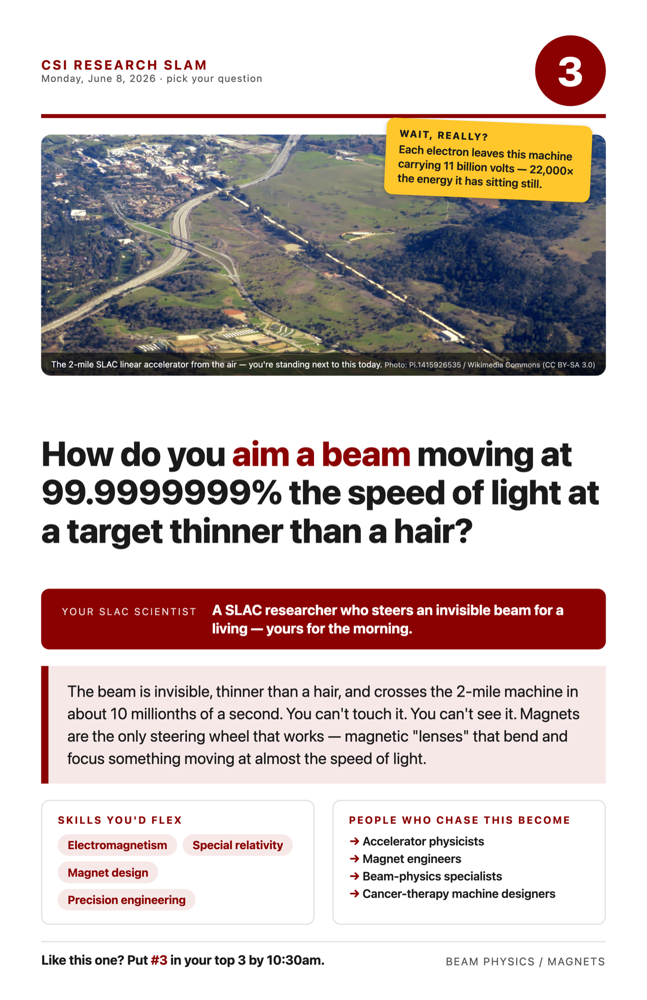

Your project · scroll down for the reading, video & math
SLAC's electron beam is invisible, thinner than a human hair, and crosses the 2-mile machine in about 10 millionths of a second. You can't see it, touch it, or put a wall in front of it. And your job is to steer it — to land it on targets thinner than a hair, all day, without missing.
You can't steer it with anything physical. The only steering wheel that works is magnetism. A charged particle moving through a magnetic field gets pushed sideways (physicists call it the Lorentz force). So the machine is lined with hundreds of magnets: dipole magnets bend the beam like a curve in the road, and quadrupole magnets squeeze it like a lens focuses light. An accelerator is basically a 2-mile-long optical instrument — except the "light" is matter and the "lenses" are magnets.
Here's the part that breaks people's brains. The beam moves at 99.9999999% the speed of light — and the interesting thing isn't the speed, it's the energy. Einstein's relativity says energy grows with a number called gamma (γ): at this speed γ ≈ 22,000, meaning each electron carries about 22,000 times its resting energy. Add one more 9 to the speed and it barely goes faster — but the energy skyrockets. That's why the machine is 2 miles long: not to make electrons faster, but to pump them fuller of energy.
Your scientist works with these magnets — and is literally writing a lecture about them. Ask how you "see" an invisible beam well enough to aim it. (The answer: sensors that feel the beam pass, plus constant automatic correction thousands of times a second.)
Wait, really? (steal these for your Wow Hunt)
- Each electron leaves the machine carrying ~11 billion electron-volts.
- The beam crosses 2 miles in ~10 millionths of a second.
- γ ≈ 22,000: each electron carries ~22,000× its resting energy.
- Magnets focus particle beams exactly the way glass lenses focus light.
Words you'll hear
Lorentz force — the sideways push a magnetic field gives a moving charged particle. Quadrupole — a 4-pole magnet that focuses the beam like a lens. Gamma (γ) — relativity's energy multiplier; huge γ = huge energy.